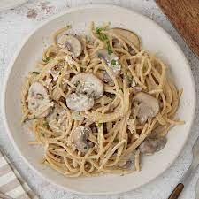

Shakshuka
Ingredients
- 3 red peppers
- 1 onion
- tomato paste
- crushed tomatoes
- 2 garlic cloves
- 1 teaspoon of cumin
- 1 teaspoon of paprika
- some coriander
Recipe
- Cut the onion and peppers into slices.
- Brown the onion and then add the peppers. Let it cook for 30 minutes.
- Add the tomato paste, crushed tomates, garlic and spices.
- Let everything cooking for another 30 minutes.
- Serve with coriander on the top.
Sushis

Ingredients
- 300g sushi rice
- 100ml rice wine vinegar
- 2 tbsp golden caster sugar
- 2 tbsp golden caster sugar
- Every filling you want: salmon, avocado, cucumber...
Recipe
- Pat out some rice. Lay a nori sheet on the mat, shiny-side down.
- Dip your hands in the vinegared water, then pat handfuls of rice on top in a 1cm thick layer,
leaving the furthest edge from you clear.
- Spread over some Japanese mayonnaise. Use a spoon to spread out a thin layer of mayonnaise
down the middle of the rice.
- Add the filling.
- Roll it up. Lift the edge of the mat over the rice, applying a little pressure to keep everything
in a tight roll.
- Stick down the sides like a stamp. When you get to the edge without any rice, brush with a little
water and continue to roll into a tight roll.
- Wrap in cling film. Remove the mat and roll tightly in cling film before a grown-up cuts the sushi
into thick slices, then unravel the cling film.
- Cover with rice and press down. Press about 3cm of rice over the fish, fold the cling film over and
press down as much as you can, using another tin if you have one.
Click here to learn how to roll sushis
Mushrooms pasta

Ingredients
- 4 Tbsp. extra-virgin olive oil
- mixed mushrooms
- 2 medium shallots, finely chopped
- 1 lb. spaghetti or bucatini
- ½ cup heavy cream
- ⅓ cup finely chopped parsley
- Zest and juice of ½ lemon
- Tbsp. unsalted butter, cut into pieces
- ½ oz. Parmesan, finely grated (about ½ cup), plus more for serving
- Freshly ground black pepper `
Recipe
- Heat 2 Tbsp. oil in a Dutch oven or other large pot over medium-high.
- Cook half of mushrooms in a single layer, undisturbed, until edges are brown and starting to crisp,
about 3 minutes.
- Give mushrooms a toss and continue to cook, tossing occasionally, until all sides are brown and crisp,
about 5 minutes more.
- Using a slotted spoon, transfer mushrooms to a plate; season with salt. Repeat with remaining
2 Tbsp. oil and mushrooms and more salt.
- Reduce heat to medium-low and return all of the mushrooms to the pot.
- Add shallots and cook, stirring often, until shallots are translucent and softened, about 2 minutes.
- Meanwhile, cook pasta in a large pot of boiling salted water, stirring occasionally, until very al dente,
about 2 minutes less than package directions.
- Using tongs, transfer pasta to pot with mushrooms and add cream and 1 cup pasta cooking liquid.
Increase heat to medium, bring to a simmer, and cook, tossing constantly, until pasta is al dente
and liquid is slightly thickened, about 3 minutes.
- Remove pot from heat. Add lemon zest and juice, parsley, butter, ½ oz. Parmesan, and lots of
pepper and toss to combine. Taste and season with more salt if needed.
- Divide pasta among bowls and top with more Parmesan.